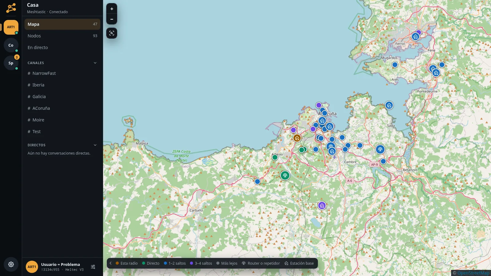
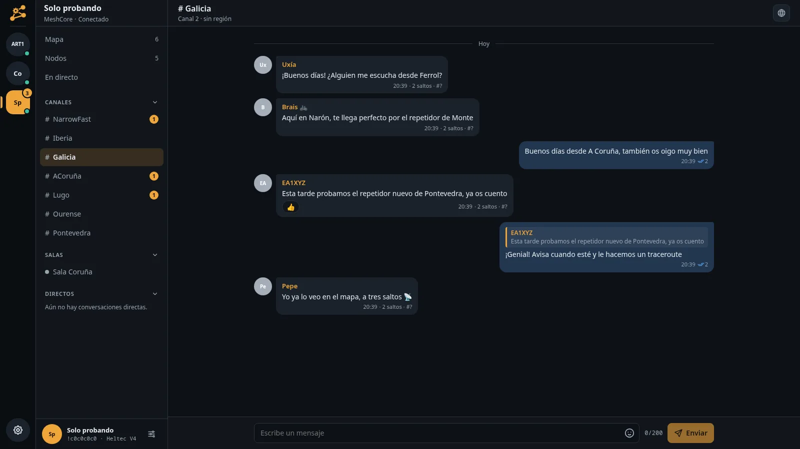
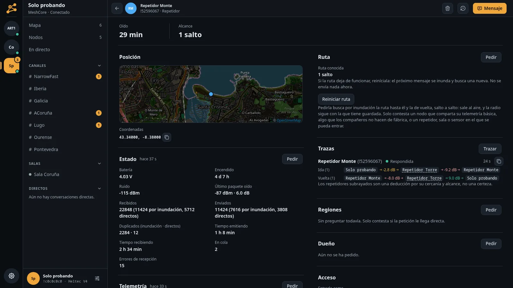
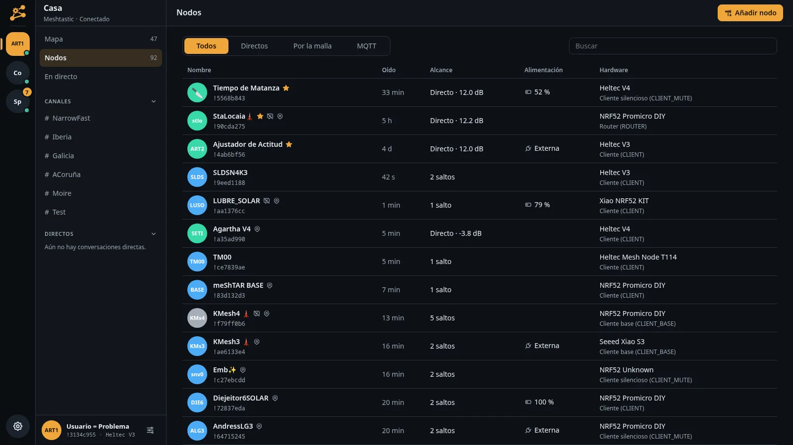
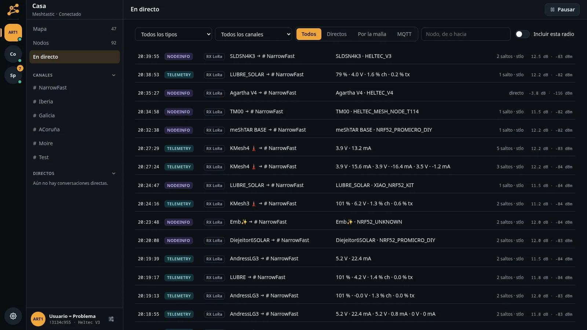
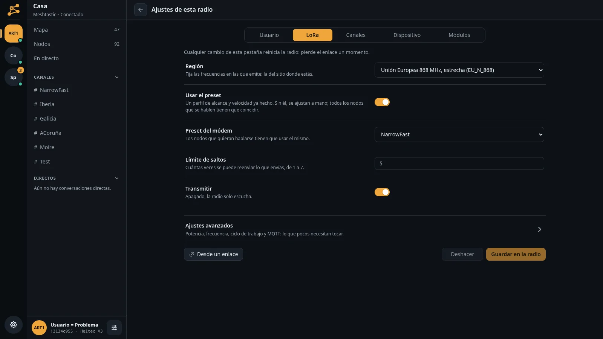
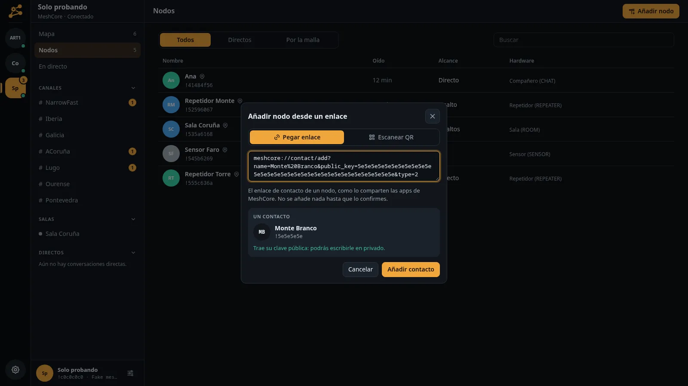
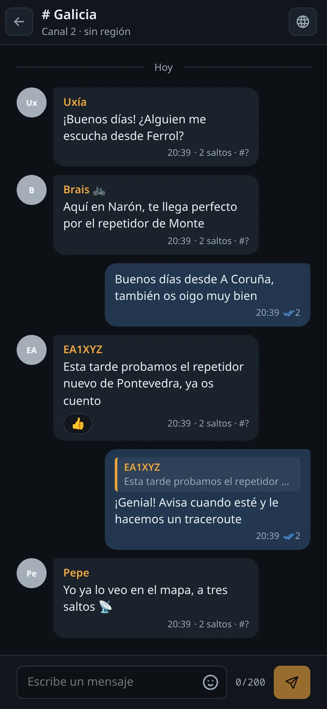
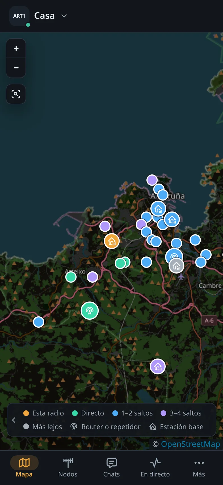

Tus radios de malla, bajo control.
meshctl se mantiene conectado a tus radios Meshtastic y MeshCore a todas horas, guarda lo que oyen y te deja hablar en sus canales y en privado, ver la malla en el mapa, seguir cada paquete que oyen y ajustarlas.
Un binario pequeño con el panel dentro, para un servidor, una Raspberry Pi o un contenedor; una app de escritorio para Windows y Linux; y una app para el móvil. Una radio o una docena, todas desde el mismo panel, en español e inglés. meshctl es joven y cambia deprisa: pruébalo y cuéntanos qué encuentras.
Tus radios
Meshtastic y MeshCore, tantas como tengas, por red o por cable, conectadas a todas horas y otra vez solas cuando se cae el enlace.
La malla en el mapa
Cada nodo oído, cuándo, cómo de bien y a qué distancia, en una lista y en un mapa, con su color según los saltos a los que está.
Una página por nodo
Lo que cuenta de sí mismo, y lo que se le puede pedir: estado, telemetría, vecinos, su posición, las lecturas de un sensor, el acceso a un repetidor.
Chat
Canales y mensajes privados, guardados mientras no estabas, con respuestas, reacciones y marcas que dicen si alguien los oyó; también las salas de MeshCore. Con avisos donde digas, los de un canal quizá solo cuando te mencionan.
Rutas
Traceroutes en las dos mallas y el descubrimiento de rutas de MeshCore, cada salto en el mapa, y los que solo se deducen, marcados como tales.
Respuestas automáticas
Si alguien escribe esto, responde con aquello: un ping con los saltos que dio y su señal, como reacción, texto o ambos, donde digas, aunque el panel esté cerrado; callado cuando el canal va cargado.
En directo
Cada paquete que oye la radio, según lo oye, con lo que lleva y el camino por el que llegó.
Ajustes
El usuario de una radio, su LoRa, sus canales, el dispositivo y los módulos, cada campo explicado, y lo que solo importa con algo encendido, solo entonces. También los de otros nodos Meshtastic, por la malla, como su administración.
Enlaces y códigos QR
Nodos, canales y la LoRa de una radio, desde los enlaces que comparten las apps: pegados, leídos de un QR con la cámara o compartidos en el móvil.
Estés donde estés
Desde cualquier navegador, o como app, en el escritorio o en Android, que sigue escuchando con la ventana cerrada. Software libre, bajo la GPL.
Pantallas
La malla de alrededor de A Coruña, como la muestra meshctl; el chat, en una radio hecha para enseñarlo.
La malla en el mapa

Cada nodo con posición, con su color según lo lejos que está, y los routers y estaciones base señalados.
Chat

Respuestas, reacciones y marcas que dicen si un mensaje salió y quién lo oyó.
Un nodo

Su posición, lo que contestó al pedírselo y la ruta hasta él, salto a salto, de ida y de vuelta.
Nodos

Cada nodo oído, para buscar y filtrar: directos, por la malla o por MQTT.
En directo

Cada paquete según se oye, para filtrar por tipo, canal o nodo.
Ajustes

Cada ajuste dicho con palabras, y guardado en la radio cuando tú lo digas.
Desde un enlace

Pegado, escaneado o compartido: se lee al momento, y se añade solo cuando lo confirmas.
En el móvil


Todo el panel, colocado para el móvil: en la app de Android, o instalado como app desde el navegador.
Instalarlo
Cada versión trae todo esto.
El daemon
meshctldUn binario, con el panel dentro, para Linux (x86_64 y aarch64, cualquier distribución) y macOS. Arráncalo y abre http://127.0.0.1:7434; la primera vez, el panel te pide una radio.
En tu propia máquina no necesita token: solo llegas tú. Para entrar desde otro sitio, dale uno o pon un proxy delante; el README cuenta cómo.
Contenedor
podman run -d --name meshctl \
-p 127.0.0.1:7434:7434 \
-v meshctl:/var/lib/meshctl \
ghcr.io/ogarcia/meshctl:latestPara amd64 y arm64. latest es la última versión; master, el último cambio, con fallos incluidos sin coste adicional.
App de escritorio
- Windows: una carpeta portable. Descomprímela y ejecuta
meshctl.exe; lo que guarda va a su lado. - Linux: un Flatpak,
flatpak install --user meshctl-*.flatpak.
Con el daemon dentro, solo en tu máquina. Al cerrar su ventana sigue escuchando tus radios, también las de Bluetooth, y los enlaces meshcore:// se abren en ella.
En el móvil
Android: un APK, android-arm64 para casi cualquier móvil, android-arm para los antiguos de 32 bits. Con el daemon dentro, como la app de escritorio: radios por red, por USB y por Bluetooth, escuchadas con la app cerrada si se lo dices. Los enlaces meshcore://, y los que le compartas desde las apps de Meshtastic o MeshCore, se abren en ella.
Cualquier móvil, con meshctl corriendo en otro sitio: ábrelo en su navegador e instálalo como app desde su menú. Por HTTPS, para los enlaces que le compartas y la cámara que lee los QR: pon meshctl detrás de un proxy que lo sirva así.